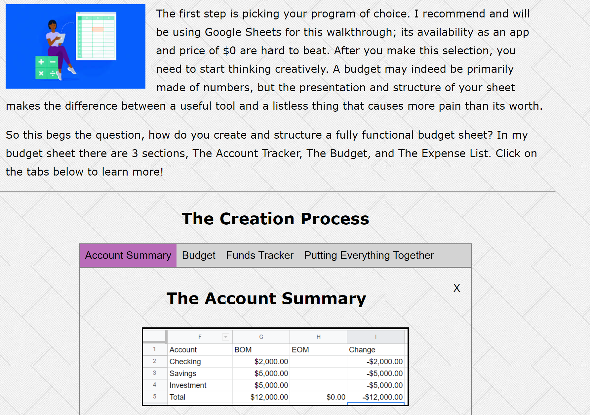

Site Revisions
The first person I asked to review my website was my wife. As a CPA, she has a great depth of experience with document and site portal layouts. This was part of my original budget building page:
She identified two issues:
- Without a header, the tab bar was not distinguished enough from the introductory paragraph.
- Having all of the tabs closed when the page was first loaded didn't show her how the tabs worked. Instead she had to figure it out herself and if she was just scrolling she could easily miss the tab bar in its entirety.
I then took her suggestions and edited the page to have a header and to have the Account Summary tab open on page load.
I also added in a line segment to further the disctinction and then replicated this styling for the later sections on the page.
The second person I asked to review my site was my older brother, a software developer
at Capital One. He pointed out that my header was slightly off center and
didnt have any indication that they were links.

I took this advice and switched from using an unordered list element to a table tag which after styling proprly centered the links. I also added a gray background and a hover color change to make them appear more like buttons.